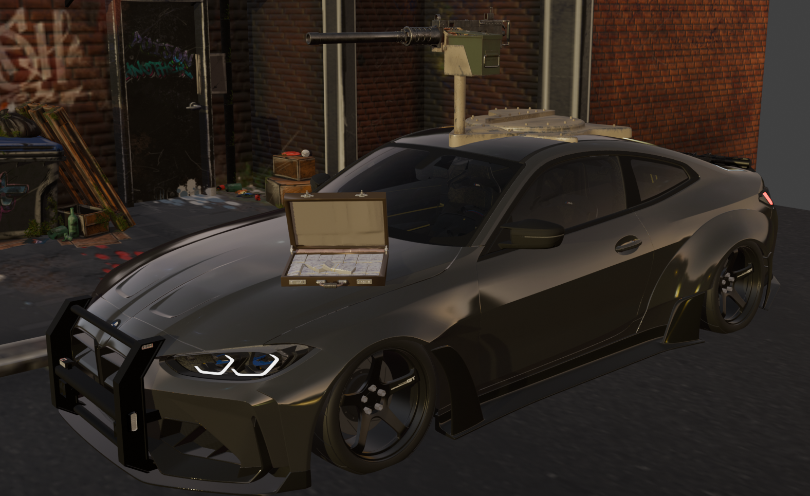

Blender beginner · learning in public
Learning to build
worlds, one render
at a time.
SCENE STUDY — 001LIGHTS ON, RENDERING
A few things I’ve put together
Selected scenes02
Small studies in mood, light
and finding the frame.
The 3D models shown here are free models. I’m learning by arranging, lighting and framing them into scenes—not modelling the assets from scratch.
A little context
NO SHORTCUTSJUST PRACTICE
I’m a newbie.
And that’s the point.
I only know the Blender basics so far. I built these scenes from free models while I figure out lighting, materials, composition and how to make a frame feel like a moment.
Nothing here is meant to look like expert work. It’s a starting point—and a reason to keep opening Blender, trying things, and getting a little better with every render.